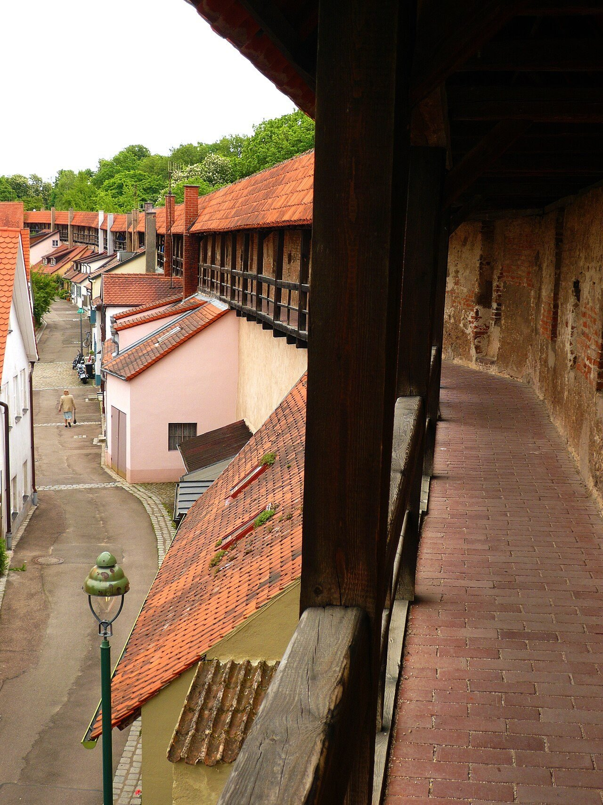
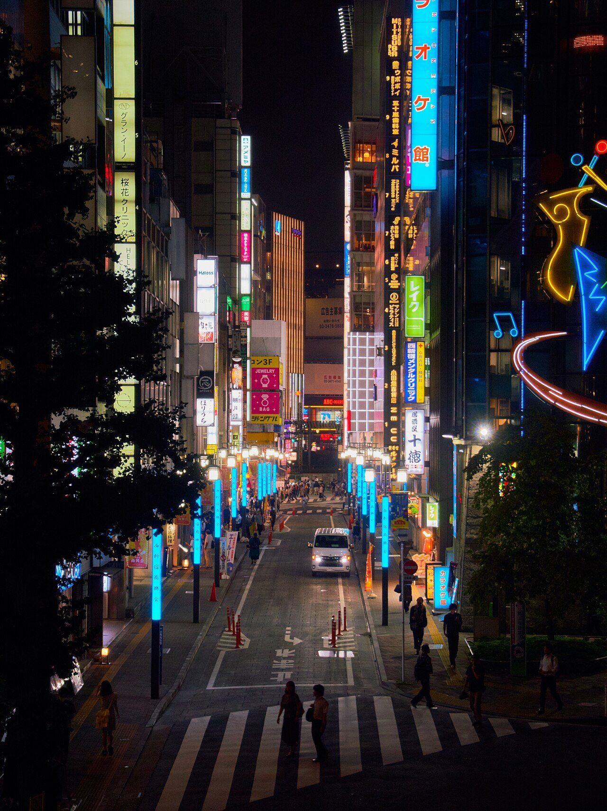
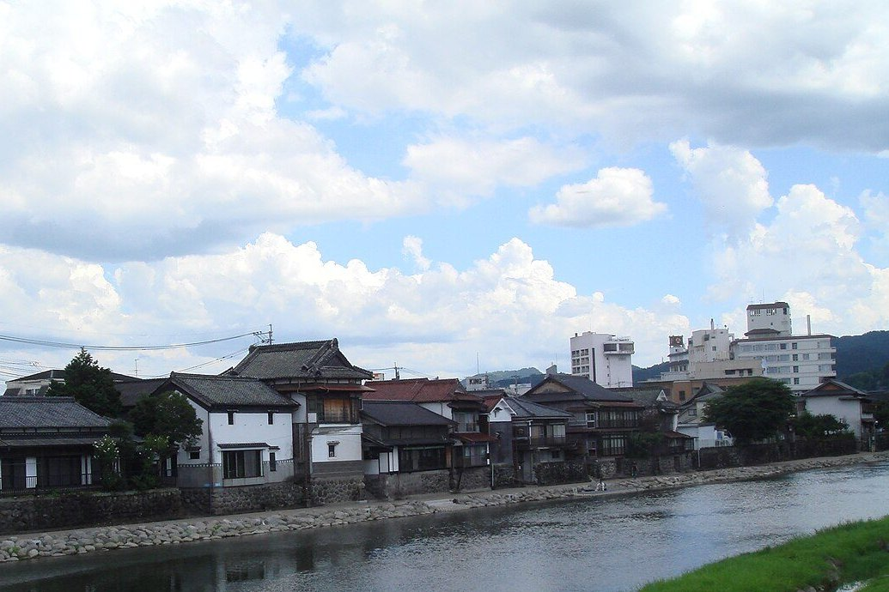
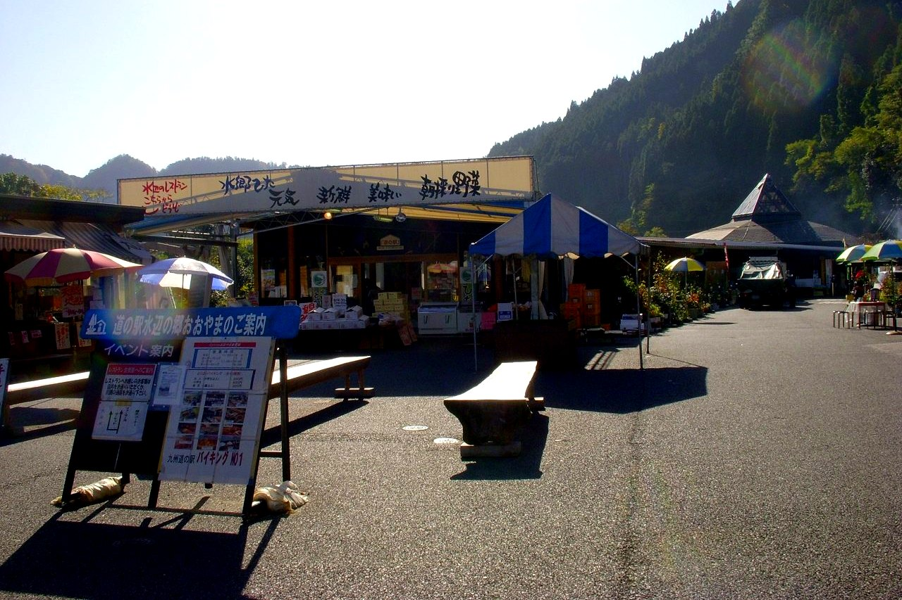
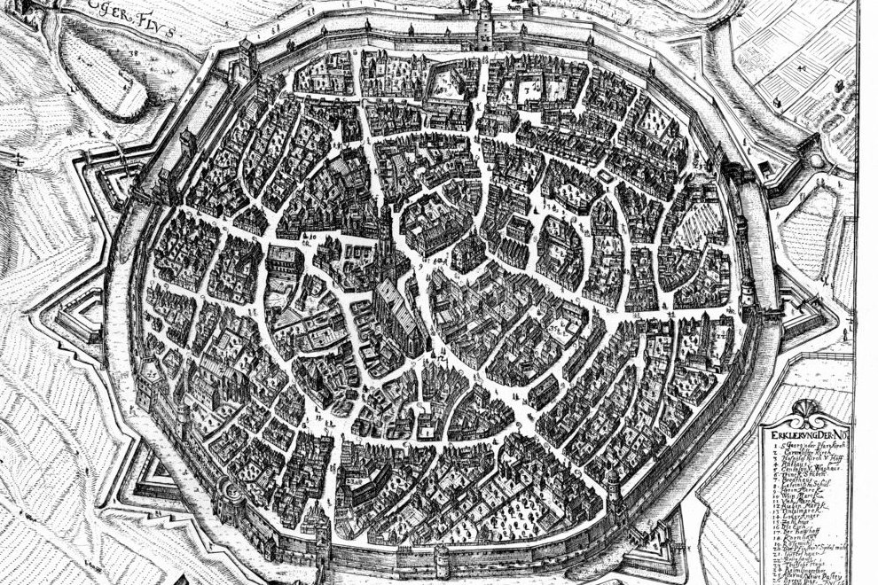
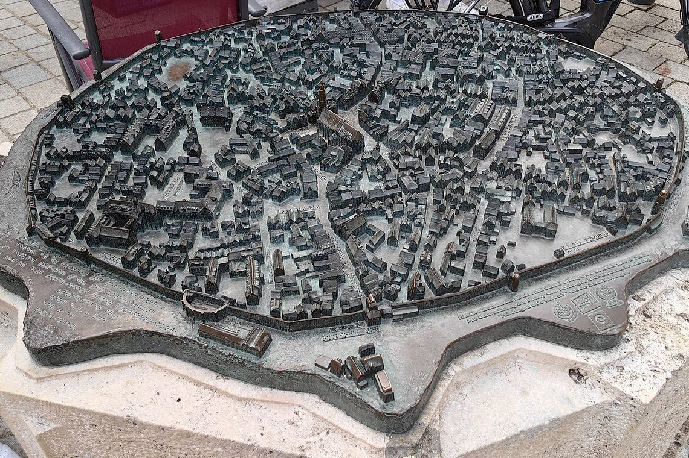

東京、深夜のインターネットカフェ。漫画家をめざして大分県から出てきたばかりの20歳ごろの諫山創（いさやま・はじめ）さんは、夜のアルバイト中、客にいきなり胸ぐらをつかまれました。
数年後の2009年9月、諫山さんは『進撃の巨人』の連載を始めます。人を食べる巨人から身を守るため、人類は3重の高い壁を築き、その中で約100年の平和を保っていた──という物語です。この壁は、いったい何を表しているのでしょうか。

人類を巨人から守る、3重の高い壁。作者の諫山創さんがインタビューで語った言葉を、故郷・日田の地図と年表、ヨーロッパの城壁都市の写真でたどります。あの壁は、人を守るものでしょうか、それとも閉じこめるものでしょうか？
東京、深夜のインターネットカフェ。漫画家をめざして大分県から出てきたばかりの20歳ごろの諫山創（いさやま・はじめ）さんは、夜のアルバイト中、客にいきなり胸ぐらをつかまれました。
数年後の2009年9月、諫山さんは『進撃の巨人』の連載を始めます。人を食べる巨人から身を守るため、人類は3重の高い壁を築き、その中で約100年の平和を保っていた──という物語です。この壁は、いったい何を表しているのでしょうか。
作者が語った壁のもとは、山に囲まれた故郷・大分県日田市の風景と、「山の向こうへ行きたい」という子どものころの気持ちでした。壁は人を守る一方で、外の世界から人を閉じこめもします。安心と息苦しさの両方を表している、と読むことができます。
巨人のもとになったのは、冒頭のネットカフェの体験です。2013年7月20日、朝日新聞の英語版に載ったインタビューで、諫山さんは、意思の通じない人に出会う怖さを感じた、と語っています（以下、英語の記事による諫山さんの言葉は、英訳をもとにした編集部の要約です）。
同じ年の9月には、日本テレビの情報番組『ZIP!』でもこの体験にふれ、同じ人間なのに話が通じないことに驚いた、と話したと報じられました。世界でいちばん身近で怖い生き物は人間だ、という結論だったといいます。
2018年5月5日にNHKで放送されたインタビューでは、巨人は酔っぱらいに少し似ている、ただ本物の酔っぱらいはあれほど不気味ではない、という趣旨のことも話しています。

物語の世界では、その「話の通じない相手」から人を守るのが壁です。単行本の第1巻や、それをもとにしたアニメの冒頭で描かれる世界を、図にまとめました。
諫山さんは1986年、大分県の大山町（おおやままち。いまの日田市）に生まれました。日田は、まわりを山に囲まれた盆地（山に囲まれた平らな土地）の町です。
先の朝日新聞の記事によると、子どものころの諫山さんは子ども相撲の大会で負けてばかりで、自分は劣っていると感じていたそうです。そして、ふるさとの狭い空より、もっと空の広い場所へ出たいと願っていました。
2013年9月の『ZIP!』では、山に囲まれた町で育ち、山の向こうを見たかったこと、その気持ちが壁に囲まれた町につながったことを話したと伝えられています。壁の外に出たがる主人公エレンの願いは、子どものころの諫山さん自身の願いでもあったのです。
2014年11月1日、日田市で開かれたトークショーで、諫山さんは、山で外から切り離された盆地のふるさとが、漫画の風景のもとになったと語りました（読売新聞の報道による）。翌日には、日田市の観光大使にも任命されています。


壁のモデルとして、もう1つよく名前が挙がる町があります。ドイツ南部のネルトリンゲンです。約1500万年前に隕石が落ちてできた、直径約25kmの大きなくぼ地（クレーター）の中にある町です。
町は、ぐるりと丸い城壁に囲まれています。いまの城壁は1327年に築かれはじめたもので、門は5つ。壁の上の通路は全長約2.6kmで、屋根つきの通路がまるごと残るのはドイツでここだけだとされます。


上から見た姿が作品の町と似ていることから、ネルトリンゲンは『進撃の巨人』のモデルだといわれてきました。2013年に日本のテレビ番組で紹介されると、ファンが訪れる町になったそうです。
ただ、作者が「モデルだ」と認めた記録は、今回の調べでは見つかりませんでした。英語版Wikipediaは「公式なつながりはない」と書き、ニュースサイトのSoraNews24（2014年1月21日）も「うわさ」として伝えています。一方、バイエルン州の観光局のサイトは、モデルになったと紹介しています。
似ていることは確かでも、作者自身の言葉で確かめられるのは、日田の山のほうなのです。
では、物語の中で壁は何を表しているのでしょう。劇場版のあらすじは、人類が「壁外への自由と引き換えに」巨人の侵略を防いでいた、と書いています。壁は安全をくれますが、そのぶん外へ出る自由を奪っているのです。
壁の中の人々の多くは、かりそめの平和に満足しています。エレンは、そんな人々を「家畜」と呼びます。同じ壁が、ある人には守りに、別の人には檻（おり）に見えるのです。山の向こうへ出たかった作者の気持ちと重なるのは、エレンの見方でしょう。

作品の外からの読みもあります。アニメのプロデューサーの和田丈嗣（わだ・じょうじ）さんは2013年7月のインタビューで、壁に囲まれるという発想は諫山さんのもので、閉じこもりがちな日本の文化に根ざしている、という趣旨で答えました（英語の記事による要約）。
評論家の杉本穂高さんは、アニメ第1話の冒頭に映る鳥を、地上の争いと対比される「自由への憧れ」の象徴と読んでいます（Real Sound、2026年1月22日）。空を飛ぶ鳥は、壁に縛られません。
『進撃の巨人』のコミックスの、世界での発行部数（2023年11月時点）Wikipedia 英語版 Attack on Titan
作中の壁の高さ。ビルならおよそ15階建てにあたる劇場版「進撃の巨人」前編のあらすじ
日田市の有志が、作品の銅像を建てるためにクラウドファンディング（ネットでの募金）で集めた額（2019年8〜10月）。正確には2900万円をやや上回ったAnime News Network、2020年3月2日
2020年11月8日、日田市大山町の大山ダムの下の広場で、エレン、ミカサ、アルミンの少年時代の銅像の除幕式が開かれ、諫山さんも出席しました。3人はダムを見上げる姿で立ち、ダムの堤（つつみ）を作中の壁に見立てています。
ところが、このダムが完成したのは2012年度です（水資源機構）。高さ94mのコンクリートの壁ができあがったのは、2009年に連載が始まったあとのことでした。
子どものころの諫山さんが見上げていた「壁」は、山でした。山から生まれた物語の壁が、のちにできた本物のコンクリートの壁に重ねられ、いまはファンを作者の故郷へ呼んでいるのです。
次に、高い塀やビルに囲まれた場所に立ったら、その壁が自分を守っているのか、閉じこめているのか、少しだけ考えてみてください。